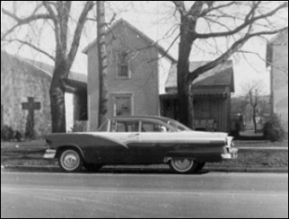

Richard Straw
Cary, North Carolina, USA
Writing One Tanka, or Would You Like Prose with That Tanka?
My younger daughter once wrote a poem that is like a tanka, so after commenting on it and offering her a rewrite (what are parents for?!), I shared with her my one and only attempt at writing tanka: where is the notebook This was "inspired" by Kenya Washio's tanka, which was quoted and explicated in a feature article on a Japanese cell-phone tanka club from the October 7, 2005, Raleigh, North Carolina,News & Observer's Life, etc., section, p. 9E, which in turn was based on an October 4, 2005,Wall Street Journal piece by Phred Dvorak. Here's Kenya Washio's tanka: Whither the baseball Here's the first draft of my first tanka, which closely parallels Kenya Washio's poem: whither the notebook To avoid an archaism ("whither") that a local haiku friend noted and to make it sound more like a Western poem that perhaps echoes François Villon's line, "where are the snows of yesteryear," the tanka was next revised as follows: gone the notebook As I worked on the tanka, I was thinking of a time in the early 1970s when I lived like a hermit in a cheap apartment above a Goodwill Store in my hometown in central Ohio. (The Goodwill Store and the apartments above it have since been torn down for a parking lot.) I was working odd jobs then, mostly warehouse manual labor, and attending college when I could afford the tuition, at a branch campus of Ohio State University. I was taking entry-level English courses on "Introduction to Drama," "Introduction to Fiction," and others, as well as basic math and science courses, such as "Introduction to Logic," and "Introduction to Geology." One Friday night, a friend from my high school days dropped by with his latest girlfriend, and both had been drinking. They later fell in love, got married, had kids, found Jesus, and are now devout parents. I occasionally get a year-end letter addressed to all of their friends and relatives, and it's full of Bible references and quotations, as well as news of personal sicknesses and faith healings. Back then, my friend would ask me about religious topics because he thought that, in his words, "I knew things." I was taking an English class that winter on "The Bible as Literature" from a hen-pecked professor who was about to retire. We used the Riverside Press edition of theDartmouth Bible, the King James translation, as our main text. My course notebook was full of his witty asides and detailed lectures from class, several redrawn maps of Bible lands, and rough drafts of papers. When my friend showed up sloshed at my apartment that evening with his girlfriend, he was a college dropout, a sometime factory worker, and a drummer in a local band. He was a seeker though and still wanted to learn, so he asked whether he could borrow my Bible class notebook. I said "OK," we talked a while, then they left. Through a second floor, lead-lined window pane, I watched them stumble into his late 1960s Chevy Impala parked jauntily alongside the snowy sidewalk of the brick storefront. He was clutching the notebook as he got behind the wheel. A little later, I asked him to return the notebook, but he and his girl said that they'd forgotten all about borrowing it and couldn't find it in the Impala or anywhere else. My professor died a long time ago, and I rarely return to my hometown now. I replied to one of their year-end letters a few years ago and asked again about the Bible notebook, but they didn't reply then or since. At least the notebook may have done someone some good: He and his wife both eventually sobered up and became believers.
 Phred Dvorak, "The Cellphone Poets of Tokyo Marry Tech, Tanka and Tradition," Wall Street Journal, October 4, 2005(pdf file)
|